QM 6700: Business Analytics
Discrete Probability Distributions
Davi Moreira
Overview
- Case Spotlight: planning capacity at Vungle
- Random variables: discrete vs. continuous
- Discrete probability distributions: table, conditions, graph
- Expected value and variance of a random variable
- Covariance, correlation, and the diversification math
- The Binomial distribution: counting installs over impressions
- The Poisson distribution: rare events over an interval
- When Binomial ≈ Poisson (large \(n\), small \(p\))
- Excel:
BINOM.DISTandPOISSON.DIST - Tail probabilities: \(P(X \geq N)\) for capacity planning
- The decision: how big a postback pipeline does Vungle need?
Case Spotlight: A/B Testing at Vungle
June 2014: From “Is B Better?” to “Can We Handle It?”
Vungle (today part of Liftoff) is a mobile ad-tech startup: it serves 15-second video ads inside other apps and earns revenue mainly when a viewer installs the advertised app.
Across June 2014, algorithm A served ~236M impressions and B served ~16M, side by side. The metric that pays the bills is eRPM (revenue per 1,000 impressions).
Every install fires a postback: a real-time callback the ad server must record, bill, and confirm to the advertiser. Installs are the events the infrastructure has to absorb.
Engineering’s worry is not “is B better?”; it is “how many installs hit us at once, and how often?” Provision too little capacity and postbacks drop (lost revenue); too much and you burn cash on idle servers.
The Brief: Today’s Managerial Question
- The big call (Topics 1–9): roll out B to all advertisers, or stay with A? Before you can ship B, engineering has to know the install load it creates. Today’s slice of that call:
“For a typical burst, what’s the chance of at least \(N\) installs, so we can size the postback pipeline without over- or under-building?”
So far we have described and compared data. Today we model it: as the manager you put a probability distribution on a random count, then read off the chance of any outcome you care about.
How today’s studio runs: I demo each distribution on a textbook example, then your group cracks a separate posted case (one sprint per class), then we debrief the capacity call.
By the end you turn a conversion rate into a defensible capacity plan, with the probabilities to back it up.
How Today’s Tools Answer It
Every tool today maps onto the Vungle install count:
| Feature of the Vungle problem | The tool |
|---|---|
| Each impression installs (yes) or not (no) | Bernoulli trial |
| Count installs over \(n\) fixed impressions | Binomial distribution (Lecture 1) |
| Installs as rare arrivals over an interval | Poisson distribution (Lecture 2) |
| “How big must capacity be?” | a tail probability \(P(X \geq N)\) |
- One conversion rate, two models; for Vungle’s tiny \(p\) they will give almost the same answer. That is today’s punchline.
Lecture 1: Random Variables, Expected Value & the Binomial
The Brief: Lecture 1
- The big call: roll out B, or stay with A? Today’s rung: how many installs should we expect, and how do we model them as a Binomial?
“Model the number of installs in a burst of 1,000 impressions as a random count. What is its expected value, its spread, and the probability it hits at least 8, the level that stresses a single postback worker?”
As the manager you build the machinery in three steps: (1) name the random variable, (2) get its expected value and variance, (3) recognize it as a Binomial and compute exact probabilities in Excel.
The number that drives everything is Vungle’s conversion rate: \(p \approx 0.0035\) for B, \(p \approx 0.0040\) for A.
How Every Class Runs

The class ends on the Team Sprint, your group’s graded submission: a decision plus your read of the analysis, one PDF before you leave.
Random Variables
What Is a Random Variable?
A random variable is a numerical description of the outcome of an experiment: it assigns a number to each possible result.
Two flavors:
- Discrete: assumes a finite or countable list of values (you can list them: \(0, 1, 2, \dots\)).
- Continuous: assumes any value in an interval (we handle these next topic).
For Vungle, the count we care about is discrete:
\[ X = \text{number of installs in a fixed batch of impressions} \in \{0, 1, 2, \dots\} \]
- Installs are counted, not measured, so \(X\) is a discrete random variable. (eRPM, by contrast, is continuous; next topic.)
Discrete: Finite vs. Countably Infinite
Finite number of values, a hard upper limit exists:
- JSL Appliances: \(x\) = TVs sold in a day \(\in \{0,1,2,3,4\}\) (you cannot sell more than you stock).
- Vungle burst: installs in 1,000 impressions \(\in \{0, 1, \dots, 1000\}\).
Countably infinite: no upper limit, but still countable:
- JSL: \(x\) = customers arriving in a day \(\in \{0, 1, 2, \dots\}\).
- Vungle: installs across a whole day (millions of impressions), no fixed ceiling.
Why it matters: the distribution we choose mirrors the structure. A fixed-\(n\) count → Binomial; an open-ended count of rare events → Poisson.
Quick Check: Classify the Variable
| Random variable | Discrete or continuous? |
|---|---|
| Installs in a 1,000-impression burst | Discrete (finite) |
| Customers arriving at Vungle’s API per minute | Discrete (countably infinite) |
| eRPM on a given day ($ per 1,000 impr.) | Continuous |
| Number of postbacks dropped in an hour | Discrete |
| Time until the next install fires | Continuous |
- Rule of thumb: if you would naturally count it, it is discrete; if you would measure it on a scale, it is continuous.
Discrete Probability Distributions
The Probability Distribution
The probability distribution of a discrete random variable lists every value \(x\) together with its probability, through a probability function \(f(x) = P(X = x)\).
It can be given as a table, a graph, or a formula.
Two conditions make a probability function valid:
\[ f(x) \geq 0 \qquad \text{for every } x \qquad\qquad \sum_{x} f(x) = 1 \]
- The first says probabilities cannot be negative; the second says something must happen.
Where the Probabilities Come From
- Three standard ways to assign the probabilities \(f(x)\):
- Classical: equally likely outcomes (a fair die: each face \(1/6\)).
- Subjective: informed judgment when there is no track record.
- Relative frequency: the share of past observations, the route we take for JSL next. It gives an empirical distribution.
A formula can also supply \(f(x)\) directly. The simplest is the discrete uniform, \(f(x) = 1/n\) over \(n\) equally likely values.
Our two workhorses, the Binomial and Poisson, are the formula distributions that fit the Vungle install count.
Anchor Example: JSL Appliances
- Using 200 days of past TV-sales data, JSL builds an empirical distribution (relative frequencies):
| \(x\) (TVs sold) | Days | \(f(x) = P(X=x)\) |
|---|---|---|
| 0 | 80 | 0.40 |
| 1 | 50 | 0.25 |
| 2 | 40 | 0.20 |
| 3 | 10 | 0.05 |
| 4 | 20 | 0.10 |
| Total | 200 | 1.00 |
- Check the conditions: every \(f(x) \geq 0\) ✓, and they sum to \(1.00\) ✓, a valid distribution.
Reading the Distribution
Once you have \(f(x)\), any question about \(X\) is just addition:
- \(P(X = 0) = 0.40\): no sale on 40% of days.
- \(P(X \geq 2) = 0.20 + 0.05 + 0.10 = 0.35\).
- \(P(X \leq 1) = 0.40 + 0.25 = 0.65\).
This is exactly the move we will make for Vungle: build \(f(x)\) for installs, then read off \(P(X \geq N)\) for the capacity plan.
The only change is how we get \(f(x)\): JSL used past data; for Vungle we will use a formula (the Binomial) driven by the conversion rate \(p\).
A Question That Often Comes Up
A question that often comes up at this point:
JSL got its \(f(x)\) by counting 200 days of sales. Why would I ever trust a formula’s \(f(x)\) for Vungle instead of just counting past installs the same way?
Short answer: counting works only for outcomes you have already seen at the right scale. JSL sold at most 4 TVs a day, so 200 days cover every value. A 1,000-impression burst can produce 0 to 1,000 installs; you will never observe enough bursts to fill that table by hand. The Binomial formula gives the probability of every \(x\), including the rare 8-plus bursts that size the pipeline, from just \(n\) and \(p\).
Expected Value and Variance
Expected Value: the Center
- The expected value \(E(X)\) (or mean \(\mu\)) is the probability-weighted average of the values \(X\) can take:
\[ E(X) = \mu = \sum_{x} x \, f(x) \]
It is the long-run average outcome over many repetitions of the experiment.
It need not be a value \(X\) can actually assume: JSL’s \(E(X) = 1.2\) TVs, though you never sell 1.2 TVs.
Variance and Standard Deviation: the Spread
- The variance is the probability-weighted average of squared deviations from the mean; it measures risk / variability:
\[ \text{Var}(X) = \sigma^2 = \sum_{x} (x - \mu)^2 \, f(x) \]
- The standard deviation is its positive square root, in the same units as \(X\):
\[ \sigma = \sqrt{\text{Var}(X)} \]
- Same mean, larger \(\sigma\) → more spread, more risk, exactly what a capacity planner fears (a big burst).
JSL Appliances: the Worksheet
| \(x\) | \(f(x)\) | \(x\,f(x)\) | \(x - \mu\) | \((x-\mu)^2\) | \((x-\mu)^2 f(x)\) |
|---|---|---|---|---|---|
| 0 | 0.40 | 0.00 | \(-1.2\) | 1.44 | 0.576 |
| 1 | 0.25 | 0.25 | \(-0.2\) | 0.04 | 0.010 |
| 2 | 0.20 | 0.40 | \(0.8\) | 0.64 | 0.128 |
| 3 | 0.05 | 0.15 | \(1.8\) | 3.24 | 0.162 |
| 4 | 0.10 | 0.40 | \(2.8\) | 7.84 | 0.784 |
| Sum | 1.00 | \(\boldsymbol{\mu = 1.20}\) | \(\boldsymbol{\sigma^2 = 1.660}\) |
\[ E(X) = 1.20 \text{ TVs} \qquad \sigma^2 = 1.660 \qquad \sigma = \sqrt{1.660} = 1.288 \text{ TVs} \]
Do It in Excel: Expected Value & Variance
Follow along:
- Lay out the \(x\) values in column A and \(f(x)\) in column B (the JSL table).
- Column C:
=A2*B2(the \(x\,f(x)\) terms); \(E(X) =\)=SUM(C2:C6)\(= 1.20\). - Column D:
=(A2-$E$1)^2*B2, with \(\mu\) parked inE1; \(\sigma^2 =\)=SUM(D2:D6)\(= 1.66\). - \(\sigma =\)
=SQRT(...)\(= 1.29\), back in plain TV units.
No ToolPak tool needed: this is the engine behind every discrete distribution; Binomial and Poisson just supply \(f(x)\).
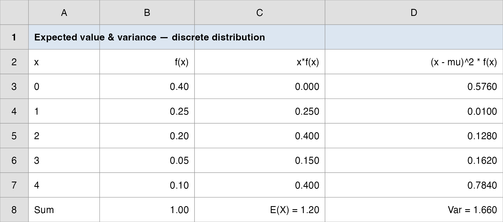
Why Managers Care: Mean and Risk Together
\(E(X)\) alone is not enough. Two ad algorithms could deliver the same average installs but a different spread, and spread is what overflows a server or empties a sales pipeline.
A capacity planner reads \(E(X)\) to size for the typical load and \(\sigma\) (and the tail) to size for the bad days.
Forward pointer: the Vungle install count has a special structure, a fixed number of impressions, each an independent yes/no at the same rate \(p\). That structure has a name: the Binomial, and it hands us \(E(X)\), \(\sigma\), and the full \(f(x)\) from just two numbers, \(n\) and \(p\).
Two Random Variables Together
When Two Counts Move Together
So far one random variable at a time. Most business risk involves two moving together: A’s installs and B’s installs each day, two stores’ sales, two stocks in a portfolio.
A bivariate distribution gives the probability of each pair of outcomes, \(f(x, y) = P(X = x, Y = y)\).
The new question is association: when one is high, is the other high too? That is what covariance and correlation measure, and it is the hinge of every diversification decision.
Textbook anchor: DiCarlo Motors runs two dealerships (Geneva = \(x\), Saratoga = \(y\)) and tracks 300 days of joint sales. Vungle parallel: A and B run side by side, so their daily install counts are a bivariate pair too.
Rules for Combining Random Variables
- Before covariance, the algebra of shifting and adding random variables. For constants \(a, b\):
\[ E(aX + b) = a\,E(X) + b \qquad\qquad \text{Var}(aX + b) = a^2\,\text{Var}(X) \]
Adding a constant shifts the mean but not the spread; scaling by \(a\) multiplies the variance by \(a^2\).
For a sum of two random variables, the means just add, but the variance carries a cross term:
\[ E(aX + bY) = a\,E(X) + b\,E(Y) \]
\[ \text{Var}(aX + bY) = a^2\,\text{Var}(X) + b^2\,\text{Var}(Y) + 2ab\,\text{Cov}(X, Y) \]
- That last term, \(\text{Cov}(X, Y)\), is the whole story: it is why combining two things can lower (or raise) total risk.
Covariance and Correlation
- Covariance is the probability-weighted average of the joint deviations from each mean:
\[ \text{Cov}(X, Y) = \sigma_{xy} = \sum \big[x - E(X)\big]\big[y - E(Y)\big]\,f(x, y) \]
- Sign reads the direction: positive = they tend to move together, negative = one up while the other down, zero = no linear link. Its size is hard to read (it carries mixed units), so we standardize it into the correlation coefficient:
\[ \rho_{xy} = \frac{\text{Cov}(X, Y)}{\sigma_x\,\sigma_y}, \qquad -1 \leq \rho_{xy} \leq 1 \]
- DiCarlo: \(\sigma_{xy} = 0.1350\) and \(\rho_{xy} = 0.1295\), a weak positive link: the two dealerships rise and fall together a little, not in lockstep.
Diversification: Why Combine at All?
- Put a fraction \(w\) of a portfolio in asset \(X\) and the rest in \(Y\). The portfolio return is \(Z = wX + (1-w)Y\), so by the rules above:
\[ E(Z) = w\,E(X) + (1-w)\,E(Y) \]
\[ \text{Var}(Z) = w^2 \sigma_x^2 + (1-w)^2 \sigma_y^2 + 2\,w(1-w)\,\rho_{xy}\,\sigma_x\,\sigma_y \]
The mean is a plain blend, but the risk is not: when \(\rho_{xy} < 1\), the cross term shrinks \(\text{Var}(Z)\) below the blend of the two variances. Low or negative correlation is what makes diversification work.
The same math sizes a supply chain: two independent suppliers (\(\rho \approx 0\)) cut shortage risk far more than two whose outages correlate.
A Question That Often Comes Up
A question that often comes up at this point:
If covariance and correlation measure the same direction, why bother computing both? Why not just report the covariance?
Short answer: covariance gives the sign but not a readable size: its units are “\(x\)-units times \(y\)-units” (cars-times-cars for DiCarlo), so \(0.135\) could be strong or trivial, you cannot tell. Dividing by the two standard deviations strips the units and pins it to \([-1, 1]\), so \(\rho = 0.1295\) instantly reads as “weak positive.” You need the covariance to build the portfolio variance, and the correlation to judge how much diversification will actually help.
The Binomial Distribution
From One Impression to Many: the Bernoulli Trial
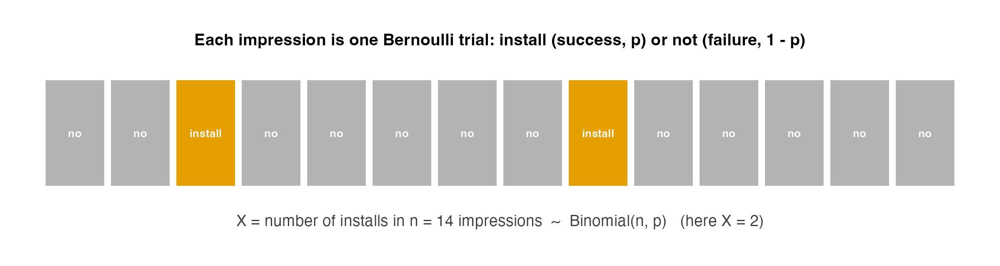
- Each impression is a Bernoulli trial: it installs (success, prob. \(p\)) or not (failure, prob. \(1-p\)).
- Count the successes over \(n\) impressions and you have a Binomial random variable.
The Four Binomial Assumptions
A Binomial experiment requires all four:
- A sequence of \(n\) identical trials.
- Exactly two outcomes per trial: success and failure.
- The success probability \(p\) is constant across trials (the stationarity assumption).
- The trials are independent.
- Vungle check: \(n\) impressions in a burst (1); each one installs or not (2); the conversion rate \(p\) is the same within a stable burst (3); one user installing does not change another’s odds (4). All four hold (approximately). So installs are Binomial.
A Question That Often Comes Up
A question that often comes up at this point:
Real ad traffic is never perfectly identical or independent, so isn’t calling Vungle’s installs “Binomial” just wishful thinking?
Short answer: the assumptions are an approximation, and the manager’s job is to know when it is good enough. Within one stable burst, impressions are similar users seeing the same ad at the same rate, so the four conditions nearly hold and the Binomial is trustworthy. They break during a viral spike (the rate jumps and installs cluster); that is the one caveat we flag in the Takeaway, and the cue to re-estimate \(p\) rather than trust the model blindly.
The Binomial Probability Function
- The probability of exactly \(x\) successes in \(n\) trials:
\[ f(x) = \binom{n}{x} p^x (1-p)^{n-x}, \qquad x = 0, 1, 2, \dots, n \]
- The binomial coefficient counts the ways to arrange \(x\) successes among \(n\) trials:
\[ \binom{n}{x} = \frac{n!}{x!\,(n-x)!} \]
- Read it in two pieces: \(p^x (1-p)^{n-x}\) is the probability of one specific arrangement; \(\binom{n}{x}\) is how many arrangements give \(x\) successes.
Anchor Example: Evans Electronics
Evans Electronics loses about 10% of hourly employees per year (\(p = 0.10\)). Choosing 3 employees at random (\(n = 3\)), what is \(P(\text{exactly 1 leaves})\)?
One specific way (leaver, stayer, stayer) has probability:
\[ (0.10)(0.90)(0.90) = (0.10)(0.90)^2 = 0.081 \]
- There are \(\binom{3}{1} = 3\) such arrangements (the leaver could be 1st, 2nd, or 3rd):
\[ f(1) = \binom{3}{1}(0.10)^1 (0.90)^2 = 3 \times 0.081 = 0.243 \]
Evans Electronics: the Full Distribution
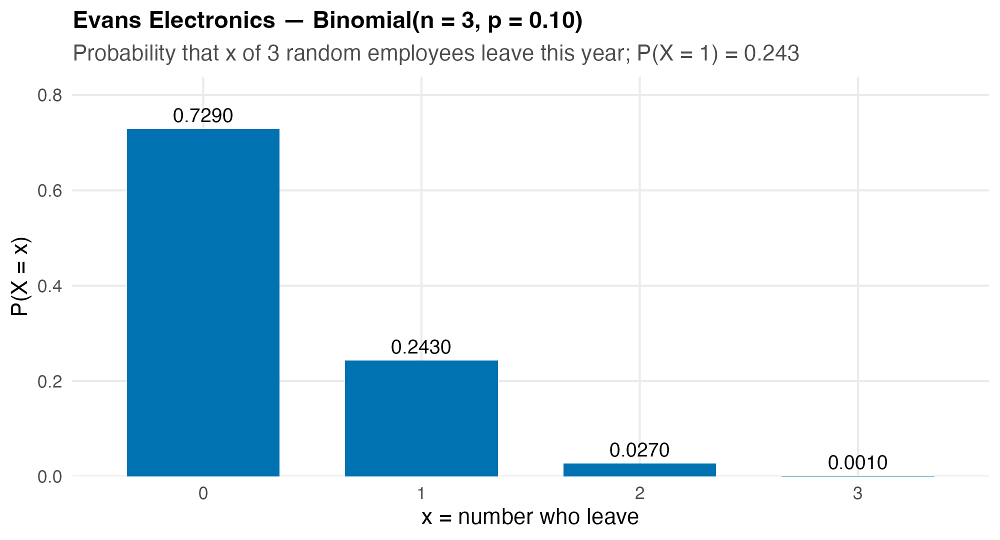
- \(f(0)=0.729,\; f(1)=0.243,\; f(2)=0.027,\; f(3)=0.001\), and they sum to 1.
- \(P(\text{at least 1 leaves}) = 1 - f(0) = 1 - 0.729 = 0.271\).
Binomial Mean, Variance, and SD
- Because the trials are identical and independent, the mean and variance collapse to clean formulas, no worksheet needed:
\[ E(X) = \mu = np \qquad\quad \text{Var}(X) = \sigma^2 = np(1-p) \qquad\quad \sigma = \sqrt{np(1-p)} \]
Evans: \(\mu = 3(0.10) = 0.30\) leavers, \(\sigma^2 = 3(0.10)(0.90) = 0.27\), \(\sigma = 0.520\).
These are the same \(E(X)\) and \(\sigma\) from the worksheet; the Binomial just hands them to you from \(n\) and \(p\).
Cumulative Probabilities and the Tail
Most business questions are about a range, not a single value. Two cumulative moves cover them all:
- “at most \(k\)”: \(P(X \leq k) = f(0) + f(1) + \dots + f(k)\).
- “at least \(N\)”: \(P(X \geq N) = 1 - P(X \leq N-1)\), the complement trick.
The capacity question is a tail: \(P(X \geq N)\), how often does the load exceed level \(N\)?
Computing these by hand is tedious; Excel does the summation for us with one function.
A Question That Often Comes Up
A question that often comes up at this point:
For “at least 8 installs,” why is it \(1 - P(X \leq 7)\) and not \(1 - P(X \leq 8)\)? The off-by-one keeps tripping me up.
Short answer: “at least 8” means \(8, 9, 10, \dots\), so the opposite event is \(7\) or fewer, not 8 or fewer. Subtracting \(P(X \leq 8)\) would wrongly throw out the 8 itself. The rule: \(P(X \geq N) = 1 - P(X \leq N - 1)\), so for \(N = 8\) you use \(P(X \leq 7)\). Get that boundary wrong and Vungle’s capacity probability is off by exactly the \(f(8)\) term.
Excel: BINOM.DIST
- Two arguments and a TRUE/FALSE switch give you everything:
| You want | Excel | Returns |
|---|---|---|
| \(P(X = x)\) (PMF) | =BINOM.DIST(x, n, p, FALSE) |
exact probability |
| \(P(X \leq x)\) (CDF) | =BINOM.DIST(x, n, p, TRUE) |
cumulative probability |
| \(P(X \geq N)\) (tail) | =1 - BINOM.DIST(N-1, n, p, TRUE) |
complement |
BINOMDIST(no dot) is the legacy alias, same result.Capacity example: \(P(\geq 5 \text{ installs in 1{,}000 impressions at } p=0.004) =\)
=1-BINOM.DIST(4, 1000, 0.004, TRUE).
The Vungle Burst: Installs as a Binomial
Set Up the Model
- The data give us the daily install counts; a count over a fixed batch of impressions is exactly a Binomial.
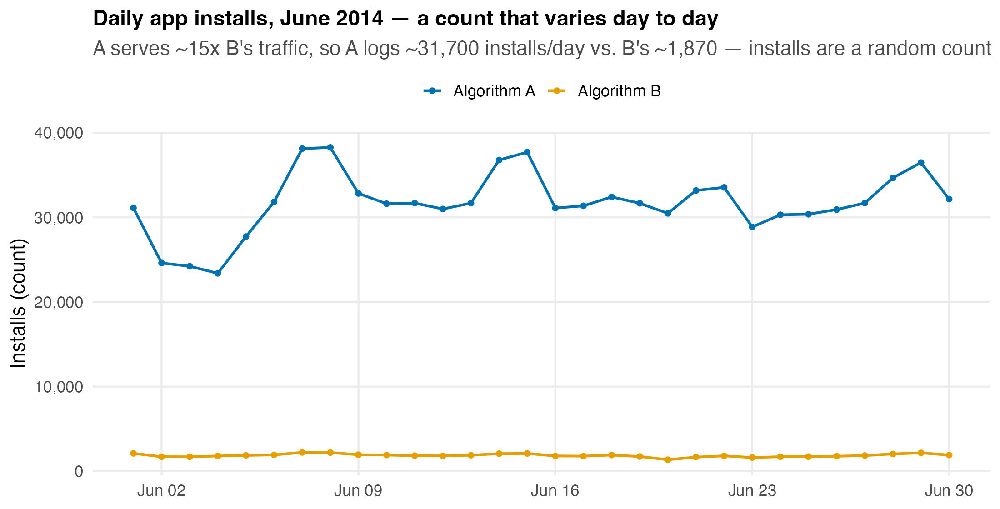
- A averages ~31,700 installs/day, B ~1,870; but for capacity we work at the burst scale (1,000 impressions), where the model is tractable and the tail is the story.
Estimate \(p\), then Build the Distribution
- From
vungle_daily.csv, the conversion rate isinstalls / impressions, averaged over the 30 days:
| Algorithm | Conversion rate \(p\) | Per-burst mean \(\mu = np\) (\(n=1000\)) |
|---|---|---|
| A | 0.4027% \(\approx\) 0.0040 | $1000 = $ 4.0 installs |
| B | 0.3538% \(\approx\) 0.0035 | $1000 = $ 3.5 installs |
- So installs per 1,000-impression burst are:
\[ X_A \sim \text{Binomial}(1000,\, 0.0040) \qquad\qquad X_B \sim \text{Binomial}(1000,\, 0.0035) \]
- \(\sigma_B = \sqrt{1000(0.0035)(0.9965)} = 1.868\) installs: a tight, right-skewed count.
The Burst Distribution: A vs. B
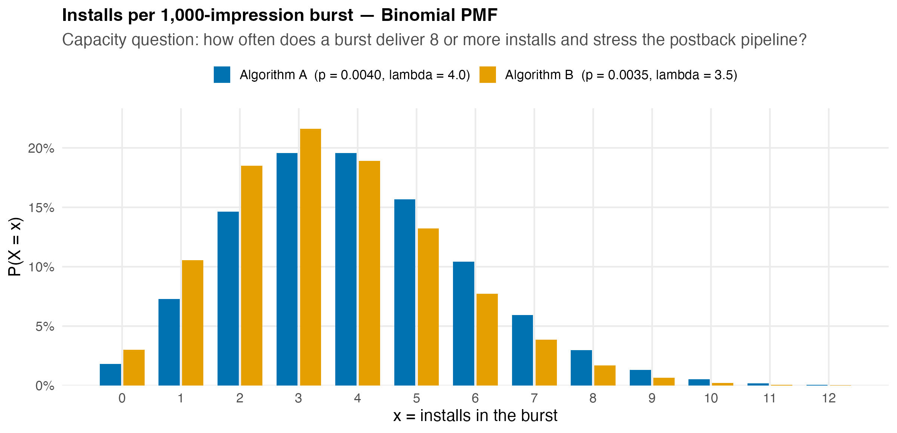
- Both peak near 3–4 installs; A’s higher rate shifts mass right and fattens the tail, so A’s bursts overflow capacity more often.
The Tail That Sizes the Pipeline
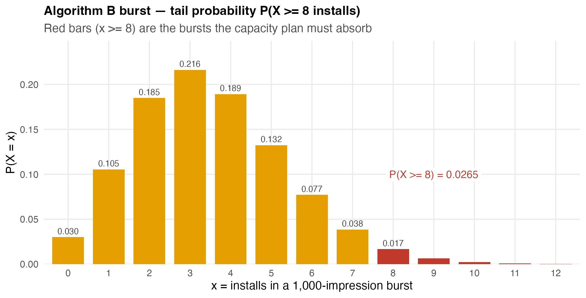
- For B, $P(X ) = 1 - P(X ) = 1 - 0.9735 = $ 0.0265: about 1 burst in 38 delivers 8+ installs.
- If one postback worker handles up to 7 installs/burst, ~2.7% of B’s bursts need a second worker; that is the capacity number.
Do It in Excel: The Vungle Burst (BINOM.DIST)
Follow along:
- List the install counts \(x = 0, 1, 2, \dots\) down column A.
- Column B (PMF):
=BINOM.DIST(A2, 1000, 0.0035, FALSE). - Column C (CDF):
=BINOM.DIST(A2, 1000, 0.0035, TRUE). - Read the capacity tail off the cumulative column: \(P(X \leq 7) = 0.9735\), so \(P(X \geq 8) =\)
=1-C9\(= 0.0265\).
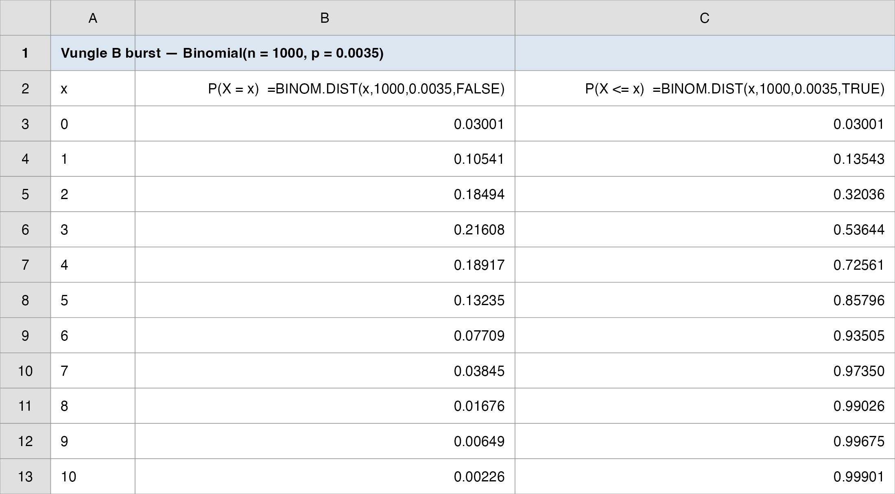
The Manager’s Takeaway (Lecture 1)
One sentence: model installs over a fixed batch of impressions as Binomial(\(n\), \(p\)), and every capacity question becomes a tail probability you read off
BINOM.DIST.One number: for Algorithm A, \(P(\geq 8 \text{ installs / 1,000-impr. burst}) \approx\) 0.051, twice B’s 0.027, because A converts at a higher rate.
One caveat: the Binomial assumes a constant, independent \(p\). Within a stable burst that holds; across a viral campaign spike it does not, so re-estimate \(p\) when traffic shifts.
Today’s Question, Today’s Answer
The question (Lecture 1):
How many installs should we expect in a 1,000-impression burst, and how do we model them as a Binomial?
The answer we reached today:
Installs are Binomial(\(1000\), \(p\)). For B (\(p = 0.0035\)): expect $= np = $ 3.5 installs with spread $= $ 1.87, and the stress level $P(X ) = 1 - P(X ) = $ 0.0265 (about 1 burst in 38). A converts higher, so its tail \(P(X \geq 8) \approx\) 0.051 is roughly twice B’s.
⏱️ Team Sprint: Your Group Case (Lecture 1)
Now it’s your group’s turn. Today’s in-class group case is posted on Brightspace (Topic 05 Group Case, Lecture 1): a separate business decision you make with today’s tools.
What you’ll use: the Binomial model, \(E(X)=np\), \(\sigma=\sqrt{np(1-p)}\), and the tail \(P(X \geq N)\). Excel: Analysis ToolPak with BINOM.DIST(x, n, p, FALSE/TRUE).
Submit one PDF per group before you leave: your decision plus the numbers behind it.
Lecture 2: The Poisson Distribution
The Brief: Lecture 2
- The big call: roll out B, or stay with A? Today’s rung: how many rare-event installs hit us over an interval, and how do we model them as a Poisson?
“Installs are rare (a few per thousand impressions). Is there a model that needs only the average rate, not the full \(n\) and \(p\)? And does it give the same capacity answer?”
Yesterday we needed two numbers, \(n\) and \(p\). The Poisson distribution needs only one: the mean rate \(\mu\) over an interval.
We will introduce Poisson on its own terms, then show it is the large-\(n\), small-\(p\) limit of the Binomial, and that for Vungle the two are nearly identical.
How Every Class Runs
The class ends on the Team Sprint, your group’s graded submission: a decision plus your read of the analysis, one PDF before you leave.
Poisson: Rare Events Over an Interval
When the Count Has No Fixed \(n\)
The Poisson distribution models the number of times an event occurs over a fixed interval of time or space, when occurrences are rare and independent:
- calls arriving at a switchboard in an hour;
- flaws in 14 feet of pine board;
- patients reaching an ER in 30 minutes;
- installs (postbacks) hitting Vungle’s API in a one-second window.
There is no natural \(n\): you are not counting successes out of a fixed number of trials; you are counting arrivals over an interval.
The Two Poisson Assumptions
- The probability of an occurrence is the same for any two intervals of equal length (a constant rate).
- Occurrences in non-overlapping intervals are independent.
One parameter governs everything: the mean number of occurrences per interval, \(\mu\) (many texts write it \(\lambda\); we keep \(\mu\), the same mean symbol as everywhere else in the course).
Vungle: at \(p \approx 0.0035\) over 1,000 impressions, installs arrive at a mean rate \(\mu = np = 3.5\) per burst. The rate is steady within a stable burst, and one install does not trigger another, so both assumptions hold.
The Poisson Probability Function
- The probability of exactly \(x\) occurrences in an interval with mean \(\mu\):
\[ f(x) = \frac{\mu^x e^{-\mu}}{x!}, \qquad x = 0, 1, 2, \dots \qquad (e \approx 2.71828) \]
- A defining property: the mean and variance are both \(\mu\):
\[ E(X) = \mu \qquad\qquad \text{Var}(X) = \mu \qquad\qquad \sigma = \sqrt{\mu} \]
There is no upper limit on \(x\), but \(f(x)\) shrinks fast; for large \(x\) it rounds to zero.
(Excel calls the parameter \(\mu\) its mean argument; some calculators and texts label the same number \(\lambda\).)
A Question That Often Comes Up
A question that often comes up at this point:
Mean equals variance, both just \(\mu\)? With the Binomial I had two separate knobs. How can one number fix the spread too?
Short answer: it falls right out of the large-\(n\), small-\(p\) setup. The Binomial variance is \(np(1-p)\); when \(p\) is tiny, \((1-p) \approx 1\), so the variance collapses to \(np = \mu\), the same as the mean. For Vungle’s \(p = 0.0035\) that approximation is excellent, which is why \(\mu = 3.5\) alone pins down both the center and the spread of the install count.
Anchor Example: Mercy Hospital
Patients arrive at Mercy Hospital’s ER at 6 per hour on weekend evenings. What is \(P(\text{exactly 4 arrivals in 30 minutes})\)?
First rescale the rate to the interval: 6 per hour \(= 3\) per half-hour, so \(\mu = 3\).
\[ f(4) = \frac{3^4 e^{-3}}{4!} = \frac{81 \times 0.0498}{24} = 0.1680 \]
- And the spread of arrivals: \(\text{Var}(X) = \mu = 3\), so \(\sigma = \sqrt{3} = 1.73\) patients per half-hour.
Mercy Hospital: the Full Distribution
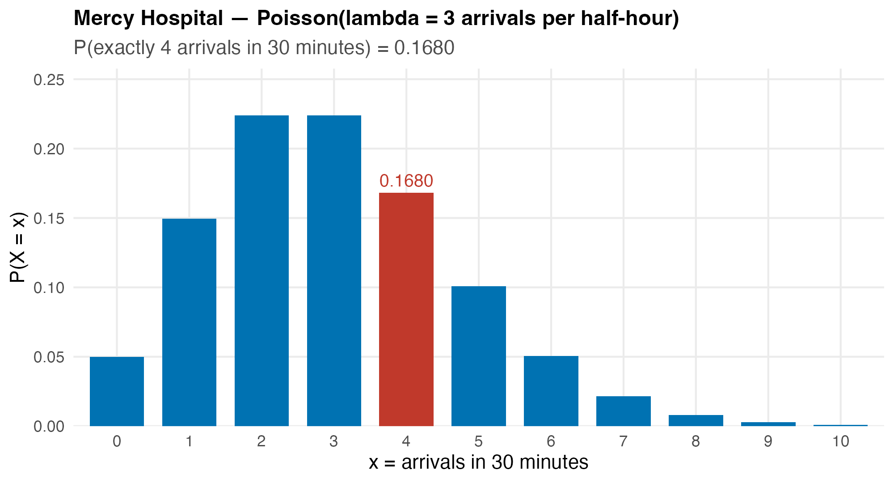
- The whole distribution comes from the single number \(\mu = 3\): no \(n\), no \(p\).
- Watch the units: \(\mu\) must match the interval. Six per hour and three per half-hour describe the same process at different scales.
A Question That Often Comes Up
A question that often comes up at this point:
If 6-per-hour and 3-per-half-hour are the “same process,” why did we have to switch to \(\mu = 3\)? Couldn’t we just plug in \(\mu = 6\)?
Short answer: no, because \(\mu\) is the mean for the interval the question asks about, and the question was about 30 minutes. Plug in \(\mu = 6\) and Excel answers “4 arrivals in an hour,” a different event. The rule is one line: match \(\mu\) to the window. For Vungle the same step turns a per-burst \(\mu = 3.5\) into a per-second or per-day rate before you read off any tail.
Excel: POISSON.DIST
- Same TRUE/FALSE switch as the Binomial, but only one parameter (\(\mu\), the mean argument in Excel):
| You want | Excel | Returns |
|---|---|---|
| \(P(X = x)\) (PMF) | =POISSON.DIST(x, mean, FALSE) |
exact probability |
| \(P(X \leq x)\) (CDF) | =POISSON.DIST(x, mean, TRUE) |
cumulative probability |
| \(P(X \geq N)\) (tail) | =1 - POISSON.DIST(N-1, mean, TRUE) |
complement |
POISSON(no dot) is the legacy alias.Mercy check:
=POISSON.DIST(4, 3, FALSE)returns0.1680: the formula and Excel agree.
Binomial vs. Poisson
The Poisson Approximation to the Binomial
- When \(n\) is large and \(p\) is small, the Binomial and the Poisson with \(\mu = np\) are nearly identical:
\[ \text{Binomial}(n, p) \;\approx\; \text{Poisson}(\mu = np) \qquad \text{for large } n,\; \text{small } p \]
Rule of thumb: the approximation is excellent when \(n \geq 20\) and \(p \leq 0.05\) (some texts use \(np \leq 7\)).
Vungle is the textbook case: \(n = 1000 \geq 20\) and \(p = 0.0035 \leq 0.05\). So \(X_B \approx \text{Poisson}(3.5)\), and we can drop \(n\) and \(p\) and work with rate alone.
A Question That Often Comes Up
A question that often comes up at this point:
If the Poisson just approximates the Binomial here, isn’t it strictly worse? Why not always use the exact Binomial and skip the approximation?
Short answer: because in real ops you often do not have \(n\) and \(p\), only the rate. Vungle’s pipeline tracks “installs per second,” not “successes out of how many impressions,” so the Binomial’s two inputs are not even available; the Poisson’s single \(\mu\) is. When you do have \(n\) and \(p\) and they are small, the two agree to three decimals (next slide), so you lose nothing by taking the simpler model.
See It: The Two Models Overlap
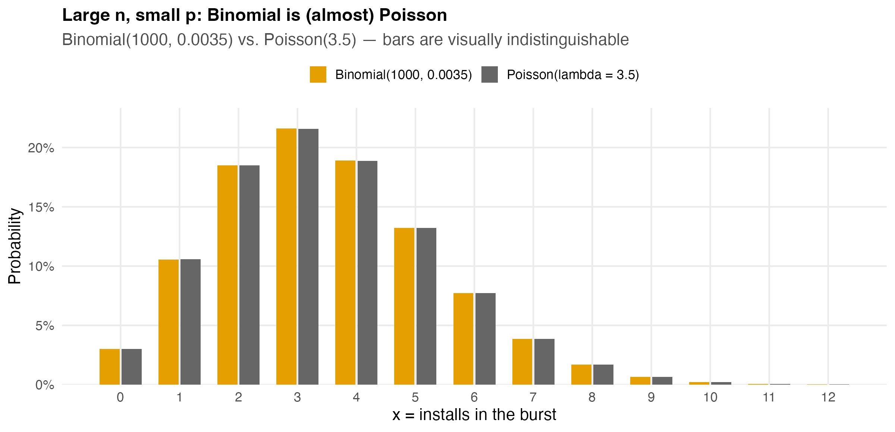
- Binomial(\(1000\), \(0.0035\)) and Poisson(\(3.5\)) agree to three decimals at every \(x\): the bars sit right on top of each other.
Do It in Excel: Binomial vs. Poisson Side by Side
Follow along:
- List the counts \(x = 0, 1, 2, \dots\) in column A.
- Column B (Binomial):
=BINOM.DIST(A2, 1000, 0.0035, FALSE). - Column C (Poisson):
=POISSON.DIST(A2, 3.5, FALSE). - Column D:
=B2-C2to see the gap; it stays under 0.001 at every \(x\).
Poisson needs one input (\(\mu = 3.5\)); Binomial needs two (\(n, p\)); for rare events you often only know the rate.
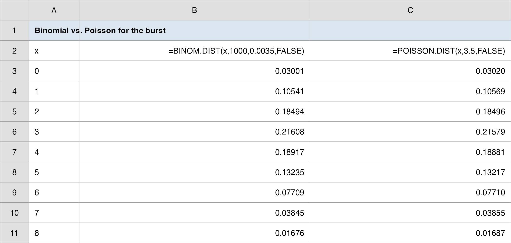
Which Model Should You Reach For?
| Situation | Use |
|---|---|
| Fixed number of trials \(n\), each success/failure at known \(p\) | Binomial |
| Count of rare arrivals over an interval; no fixed \(n\); you know the rate | Poisson |
| Large \(n\), small \(p\) (e.g., installs over impressions) | Either (Poisson is the simpler shortcut) |
- For Vungle’s capacity work, Poisson is the natural choice: postbacks arrive over a time window, and all engineering tracks is the mean rate \(\mu\), not a count of impressions.
The Vungle Pipeline: A Poisson Capacity Plan
Installs per Burst as a Poisson Process
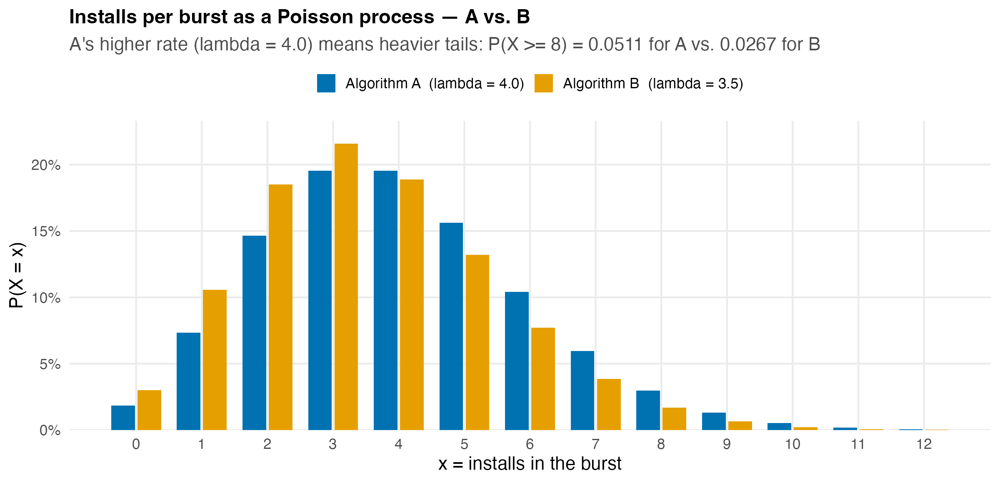
- \(X_A \sim \text{Poisson}(4.0)\) and \(X_B \sim \text{Poisson}(3.5)\).
- A’s higher rate means heavier tails, so A overflows a fixed capacity more often than B.
The Capacity Tail: Both Ways Agree
- The question that sizes the pipeline: \(P(X \geq 8)\), how often does a burst exceed a single worker’s capacity of 7?
| Algorithm | Binomial \(P(X \geq 8)\) | Poisson \(P(X \geq 8)\) |
|---|---|---|
| B (\(\mu = 3.5\)) | 0.0265 | 0.0267 |
| A (\(\mu = 4.0\)) | 0.0508 | 0.0511 |
Both models give the same managerial answer: ~5% of A’s bursts and ~2.7% of B’s bursts need overflow capacity.
In Excel:
=1 - POISSON.DIST(7, 4, TRUE)\(= 0.0511\) for A.
Scaling Up: From Burst to Pipeline
- The rate scales with the interval, the Poisson workhorse property. If a burst is 1,000 impressions and A serves ~7.9M impressions/day:
\[ \mu_{\text{day}} = \underbrace{\frac{7{,}900{,}000}{1{,}000}}_{7{,}900 \text{ bursts}} \times \underbrace{4.0}_{\mu \text{ per burst}} \approx 31{,}600 \text{ installs/day} \quad (\text{matches the data's} \approx 31{,}700) \]
Want installs per second? Divide \(\mu\) by 86,400. Want per hour? Multiply by 3,600. One parameter, any interval, no need to recount impressions.
That is why ops teams model arrivals as Poisson: provision for \(\mu\) plus a tail buffer, and re-scale instantly as traffic grows.
A Question That Often Comes Up
A question that often comes up at this point:
If I double the interval, \(\mu\) doubles. Does the tail probability \(P(X \geq N)\) just double too?
Short answer: no, only \(\mu\) scales linearly with the interval; the tail does not. Double the window and you must recompute \(P(X \geq N)\) with the new \(\mu\) from scratch, because both the center and the whole shape shift. For Vungle: a per-second \(\mu\) and a per-hour \(\mu\) are a clean multiply apart, but their capacity tails are two separate POISSON.DIST calls. Scaling the rate is free; the probability still needs the function.
The Manager’s Takeaway (Lecture 2)
One sentence: for rare events over an interval, the Poisson(\(\mu\)) models the count from a single rate, and for Vungle’s tiny \(p\) it gives the same capacity answer as the Binomial.
One number: \(P(\geq 8 \text{ installs/burst}) \approx\) 0.051 for A (Poisson \(\mu = 4\)): provision a second worker for ~1 burst in 20.
One caveat: Poisson assumes a constant, independent rate. A viral spike breaks both assumptions: arrivals cluster, the true tail is heavier than Poisson predicts, and you under-provision. Monitor for over-dispersion (variance \(>\) mean).
Today’s Question, Today’s Answer
The question (Lecture 2):
Is there a model that needs only the average rate, not the full \(n\) and \(p\), and does it give the same capacity answer?
The answer we reached today:
Yes: the Poisson(\(\mu\)) needs only \(\mu = np\). For B, $= $ 3.5; the capacity tail $P(X ) = $ 0.0267 matches the Binomial’s 0.0265, and for A both give \(\approx\) 0.051. For Vungle’s tiny \(p\) the two models agree to three decimals, so you can plan from the rate alone.
Wrap-up
Discrete Distributions on One Page: the Vungle Bridge
| Concept | Formula | Applied to Vungle | Excel |
|---|---|---|---|
| Expected value | \(E(X) = \sum x\,f(x)\) | mean installs per burst | =SUMPRODUCT(x, f) |
| Variance | \(\sigma^2 = \sum (x-\mu)^2 f(x)\) | spread / risk of the count | formula cells |
| Covariance / corr. | \(\sigma_{xy};\;\rho_{xy} = \sigma_{xy}/(\sigma_x \sigma_y)\) | do A and B move together? | formula cells |
| Binomial | \(f(x) = \binom{n}{x}p^x(1-p)^{n-x}\) | installs in \(n=1000\) impressions, \(p=0.0035\) | =BINOM.DIST(x,n,p,0/1) |
| Binomial mean/var | \(np,\; np(1-p)\) | \(\mu_B = 3.5,\; \sigma_B = 1.87\) | (formula) |
| Poisson | \(f(x) = \mu^x e^{-\mu}/x!\) | installs as rare arrivals, \(\mu = 3.5\) | =POISSON.DIST(x,mean,0/1) |
| Poisson mean/var | \(\mu,\; \mu\) | \(\mu_B = \sigma^2_B = 3.5\) | (formula) |
| Tail (capacity) | \(P(X \geq N) = 1 - P(X \leq N{-}1)\) | \(P(X_A \geq 8) \approx 0.051\) | =1-...DIST(N-1,...,1) |
The Manager’s Takeaway
One sentence: a conversion rate plus a count structure (fixed \(n\) → Binomial; rare arrivals → Poisson) gives the full probability distribution of installs, and every capacity question is a tail probability.
One number to remember: \(P(X \geq 8) \approx\) 0.051 for Algorithm A bursts (about 1 in 20): the number that sizes the overflow buffer.
One caveat: both models assume a constant, independent rate; real traffic spikes (viral campaigns) cluster arrivals and fatten the tail, so re-estimate the rate and watch for over-dispersion.
Practice with the real data:
data/vungle_daily.csv→ estimate \(p\);data/vungle_discrete.xlsx→ reproduce the PMF/CDF tables withBINOM.DISTandPOISSON.DIST.
⏱️ Team Sprint: Your Group Case (Lecture 2)
Now it’s your group’s turn. Today’s in-class group case is posted on Brightspace (Topic 05 Group Case, Lecture 2): a separate business decision you make with today’s tools.
What you’ll use: the Poisson model, \(E(X)=\text{Var}(X)=\mu\), and the capacity tail \(P(X \geq N)\). Excel: Analysis ToolPak with POISSON.DIST(x, mean, FALSE/TRUE).
Submit one PDF per group before you leave: your decision plus the numbers behind it.
Summary
The points to carry out of this session:
- A random variable assigns a number to each outcome (discrete = counted, continuous = measured); a valid distribution has \(f(x) \geq 0\), \(\sum f(x) = 1\), with \(E(X) = \sum x f(x)\) and \(\sigma^2 = \sum (x-\mu)^2 f(x)\).
- Covariance / correlation measure how two counts move together; with \(\rho_{xy} < 1\) the cross term in \(\text{Var}(wX + (1-w)Y)\) shrinks total risk: that is diversification.
- The Binomial counts successes in \(n\) fixed Bernoulli trials: \(f(x) = \binom{n}{x}p^x(1-p)^{n-x}\), with \(\mu = np\), \(\sigma^2 = np(1-p)\).
- The Poisson counts rare arrivals from one rate \(\mu\): \(f(x) = \mu^x e^{-\mu}/x!\), with \(\mu = \sigma^2\); for large \(n\), small \(p\) it equals Binomial(\(np\)), the Vungle case.
- Capacity = a tail probability: \(P(X \geq N) = 1 - P(X \leq N-1)\), computed in one Excel cell.
- Next time: we move from discrete counts to continuous measurements, the Normal distribution, and the question “what is the probability eRPM exceeds $3.50?”
- Homework (individual): the Binomial and Poisson models are drilled on HW2, posted on Brightspace; run them yourself so you can check an analyst who uses them.
Thank you!
Business Analytics